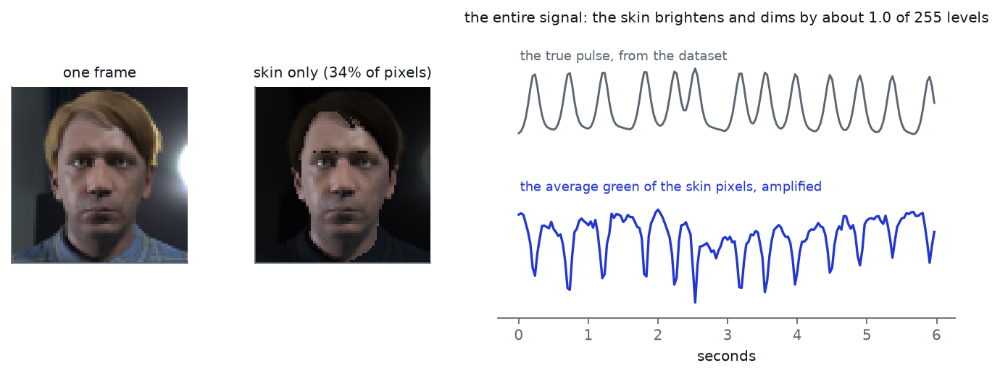
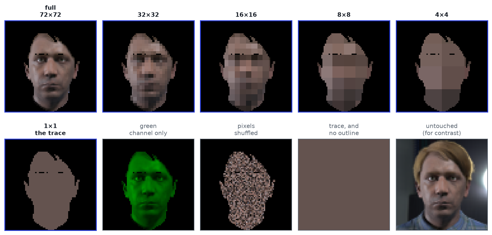
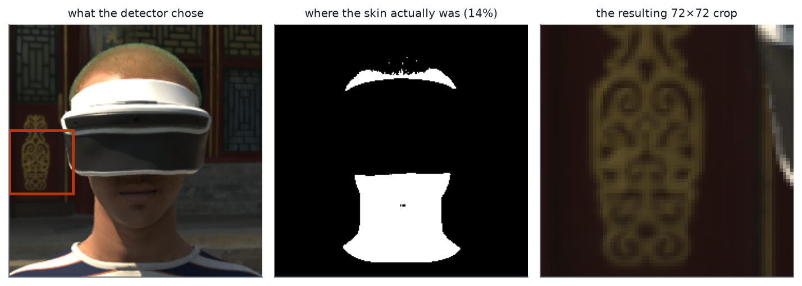

Your face is blinking, very faintly
Every time your heart beats, it pushes a little more blood into the capillaries just under your skin. Blood absorbs green light more than the surrounding tissue does, so with each beat your face gets very slightly darker, then very slightly brighter again. Your eyes cannot see it. A camera can.
The technique is called remote photoplethysmography, usually shortened to rPPG. Take a video of a face, average the colour of the skin pixels in each frame, and you get a wobbly line that rises and falls at the rate of the heartbeat. That is genuinely all there is to the classical version of it. The wobble is tiny — in the video below, the average green value of the skin swings by about 1.0 of the 255 brightness levels a camera records, which is roughly a third of one percent — but it is periodic, and periodic signals are easy to pull out of noise.

Modern rPPG uses a neural network instead of an average, and it works better. You feed in a short clip of a cropped face and it outputs a pulse waveform. The selling point, when this gets built into a fitness app or a driver-monitoring system or a telehealth call, is that it is unobtrusive and privacy-preserving: no contact, no wearable, and the only thing that comes out is a heart rate.
That last claim is about the output. It is not a claim about the model's internal representation — the few hundred numbers the network computes on its way to producing the waveform. Those internal numbers, not the heart rate, are what gets cached, batched, sent to a server, or logged for debugging. Nobody in the applied literature reports what is in them. That is the gap this is about.
Faces that belong to nobody
To ask the question you need face videos with known heart rates, which is normally an access-request-and-wait-three-weeks situation. I used SCAMPS instead: 2,800 videos of computer-generated avatars, rendered with a synthetic pulse driving the skin colour, so the true heart rate is known exactly rather than measured with a finger clip. Every face in this article is one of those avatars. None of them is a person. That is what makes it possible to publish the pictures at all, which is a slightly funny thing to have to say in an article about faces being identifiable.
Getting the data was the first surprise. SCAMPS ships a spreadsheet of per-file download links, and every one of them points at a storage account that no longer exists. The only working route is a single 593 GB compressed archive. Since the archive is gzipped, and gzip cannot be skipped into, you cannot ask for file number 400 — you can only start reading from the beginning and stop when you have enough. So the ingest is literally a download piped into an extractor with a byte budget attached: it streams until it has taken 16 GB and then the pipe closes. That got me 122 videos in about an hour and a half.
How you break a face on purpose
The experiment is a ladder. At the top, the model sees the full face crop, 72×72 pixels, with everything that is not skin blanked out. At each rung down, the skin region is averaged into progressively coarser blocks — 32×32, then 16×16, 8×8, 4×4 — until at the bottom there is a single average colour for the entire face, one number per colour channel per frame. Nothing about the pulse is deliberately removed on the way down. Averaging pixels together does not weaken a signal that every pixel shares; if anything it cleans it up.

Four more conditions sit off the ladder because they are not degrees of the same thing. Green only throws away the red and blue channels. Pixels shuffled scrambles the positions of the skin pixels, using the same shuffle for every frame in a clip — so each pixel keeps its own history intact while the face's layout is destroyed. Untouched keeps hair, clothing and background, as a reference point. And the last one I only added halfway through, for a reason that turns out to be the most interesting part of the result.
Two questions, one set of numbers
Here is the whole method. Take a released heart-rate model. Freeze it — no training, no fine-tuning, the weights never move. Push a clip through it and grab the activations from three layers inside, which gives 1,536 numbers per clip. Then fit the simplest possible thing on top of those numbers, twice: once to predict the heart rate, and once to predict which person this is, from a fixed set of 120. If a plain linear classifier can read something off the embedding, the embedding contains it. This is called probing, and its whole appeal is that a linear model is too weak to invent structure that is not there.
The catch with probing is that a number on its own is meaningless. Ninety percent accuracy sounds excellent until you learn that ninety percent of the examples were the same class. So every result here is reported against four floors, and none of them is optional:
An untrained model — the identical architecture with random weights, never trained on anything — tells you what you would get from any arbitrary projection of the input. Raw pixels — the same probe fitted straight onto the degraded image, with no model at all — tells you whether the model was needed. Shuffled labels tell you what the probe scores when there is definitionally nothing to learn. And POS and CHROM, two hand-derived formulas from 2013 and 2016 that involve no learning whatsoever, tell you whether a decade of deep learning bought anything.
The face survives being destroyed
120 people, 480 clips. Guessing at random gets you 0.83%.
Identity is 100% at the full crop, which is not surprising. It is still 100% at a 4×4 block average. Sixteen coloured squares per frame, one of 120 possible people, and the probe does not make a single mistake. The entire ordered ladder — every rung from a full-resolution face down to sixteen blocks — costs essentially nothing in re-identifiability.
Shuffling the pixels does not help either: 99.2%. Scrambling where everything sits on the face leaves the person just as identifiable, which already hints that the model is not relying on facial features in the way you might picture.
The outline was giving it away
Look again at the bottom-left panel of Fig 2 — the 1×1 condition, one flat colour for the whole face. Identity there drops to 75.8%, which is a real drop, but it is still a hundred times chance. From one colour? That made no sense until I looked at the picture properly.
It is not one colour. It is one colour in the shape of that person's face, with holes where their eyes and eyebrows are, because everything outside the skin region gets blanked to black and the skin region is a silhouette of them. I had built a condition that removed all the texture and left a perfect stencil of the subject. The mask was leaking the identity the pixels no longer could.
So I added one more condition: take that single average colour and paint it across the entire frame, no outline at all. Three numbers per frame, and nothing else. Identity falls to 12.5%.
That is the actual finding, and it is a more useful one than the tidy curve I set out to draw. Blurring does not anonymise a face. Blurring plus deleting the shape of the face gets you most of the way there — and even then, 12.5% out of 120 people is about 15× what you would get by guessing.
The heart rate, meanwhile, was never really there
Now the part that does not flatter the experiment. The bottom panel of Fig 3 is nearly flat, which I could present as "heart rate survives the degradation." It would be a fair description of the shape and a misleading description of the result, because the line is flat at a level that is not much of an achievement.
If you ignore the video entirely and always answer with the dataset's average heart rate, you are wrong by 28.8 beats per minute. The probe on the frozen embedding manages 25.3. POS, the 2013 formula, gets 15.8 on the same clips. So on this data the embedding carries the person's identity completely and their pulse only faintly.
The likely reason is that this particular model was trained on videos of real people and I ran it on synthetic renders. Faces built by a graphics engine are not the same distribution as faces lit by a real room, and the pulse is the part that would suffer first — it is a sub-one-percent colour fluctuation, and a renderer approximates it. Identity, which lives in gross appearance, transfers fine. The honest summary is that this is a strong result about re-identification and a weak one about heart rate, and the fix is real datasets, which is where this goes next.
| condition | identity | identity, raw pixels | heart-rate error | POS |
|---|---|---|---|---|
| full 72×72 | 100.0% | 100.0% | 25.3 | 15.8 |
| 32×32 | 100.0% | 100.0% | 24.9 | 15.8 |
| 16×16 | 100.0% | 100.0% | 21.5 | 15.8 |
| 8×8 | 100.0% | 100.0% | 22.2 | 15.8 |
| 4×4 | 100.0% | 100.0% | 25.0 | 15.8 |
| 1×1, the trace | 75.8% | 98.3% | 18.7 | 15.8 |
| green only | 100.0% | 100.0% | 20.3 | 50.4 |
| pixels shuffled | 99.2% | 93.3% | 25.1 | 15.8 |
| trace, no outline | 12.5% | 98.3% | 20.8 | 15.8 |
| untouched | 100.0% | 100.0% | 25.3 | 18.6 |
What I would not claim from this
The identity task here is easier than real re-identification. SCAMPS gives no indication of which avatar is which across videos, so "the same person" means "a different four-second clip of the same twenty-second recording." Same avatar, same lighting, same camera. A probe that tells those apart has done something easier than recognising someone who walked back in on a different day. The number is an upper bound, and the datasets that would make it a fair estimate — PURE, with ten subjects recorded in six sessions each, and MMPD, with thirty-three subjects across four lighting conditions — are the obvious next step. The code is already written against an interface with those two in mind.
The untrained-model floor also deserves stating plainly: a randomly initialised network of the same shape identifies these clips nearly as well as the trained one. So the identity information is not something the heart-rate training specifically learned. It is in the input, and essentially any encoder would pass it along. That is arguably worse news for the privacy pitch rather than better — it means you do not get anonymity by picking a different model.
And SCAMPS is synthetic. Skin tones in it are whatever the renderer produces, not whatever the world contains, so nothing here says anything about how this behaves across real skin tones. That question needs MMPD, which labels Fitzpatrick group, and the analysis code refuses to pool heart-rate error across those groups when they are present — reporting one average across skin tones is exactly how you hide that a method works for some people and not others.
Three things that were wrong first
Every heart rate was a multiple of 14.06. The toolbox's own frequency estimator sizes its transform to the length of the clip, which for a four-second clip at 30 frames per second gives bins 14.06 beats per minute apart. Every value it returned was 126.56, or 98.44, or 70.31 — which are 9, 7 and 5 times 14.0625. A study about a few beats per minute cannot be measured on a grid that coarse, and it took plotting the numbers and noticing they were suspiciously round to catch it. Padding the transform fixes it; the test suite now asserts that the padded version still reproduces the original exactly when the padding is switched off.
One avatar was wearing a VR headset. The face detector, a twenty-year-old cascade classifier, found no face — reasonably — and then instead of failing, locked onto a 60×60 patch of ornamental wallpaper on the back wall and reported success. The pipeline dutifully cropped the wallpaper, resized it to 72×72 and fed it in. Its skin mask was empty, so nothing downstream would have crashed: the averages would have been zeros and the probe would have quietly fitted on a row of blanks. It is now caught by a check that the crop actually contains skin, and that video is excluded with its reason recorded.

The machine spent an hour swapping. The sweep held every clip's frames in memory at once — about a gigabyte, on a laptop with eight — and drove itself four gigabytes into swap. The fix was one line: keep the frames as views into the memory-mapped files on disk instead of copying them out. The stage that had been running at 1.4 seconds per clip dropped to 45 milliseconds. It is a reminder that "why is this slow" is worth thirty seconds of measurement before it is worth any redesign.
Reproducing it
The code is at tanmayhinge/rppg-identity-tradeoff. It is config-driven and seeded, it runs on an M2 laptop in about two hours once the data is down, and the test suite is 107 tests with the degradation ladder and the probing logic as the two acceptance gates. The preprocessing is checked to be bit-identical to the reference toolbox's, so "we reimplemented it" never quietly became "we changed it".
My favourite test is the cheapest one. POS and CHROM only ever see the average colour of the skin, and every rung of the ladder is built to preserve that average exactly. So both must return identical heart rates at every rung. They do, to the digit, on real data. If the masking, the block partition, the alignment between mask and frame, or the clip assembly is wrong anywhere, that equality breaks — one assertion covering most of the pipeline.
Credit
The avatar images are from SCAMPS: D. McDuff, M. Wander, X. Liu, B. L. Hill, J. Hernandez, J. Lester and T. Baltrusaitis, SCAMPS: Synthetics for Camera Measurement of Physiological Signals, NeurIPS 2022, used under the Research Use of Data Agreement v1.0, which permits the small excerpts of the data needed to explain work done with it. The frozen models, the preprocessing and the POS and CHROM implementations come from rPPG-Toolbox: X. Liu et al., rPPG-Toolbox: Deep Remote PPG Toolbox, NeurIPS 2023. This is non-commercial research use.